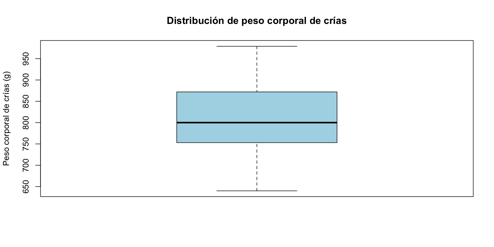
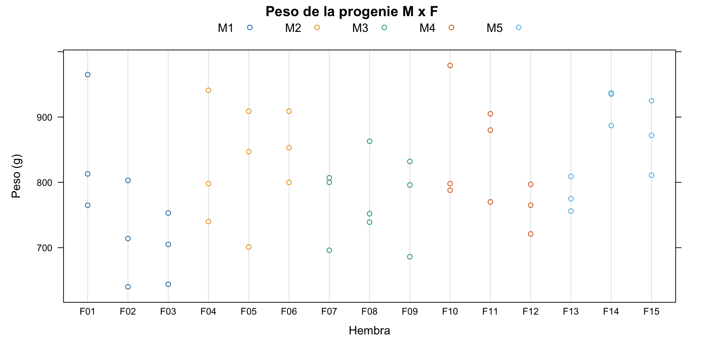
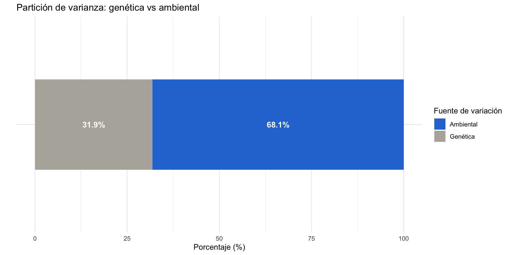
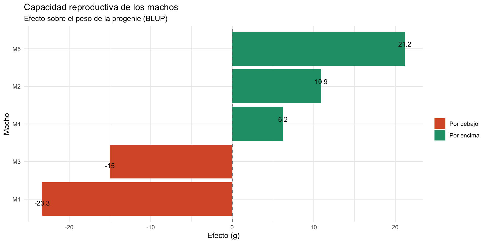
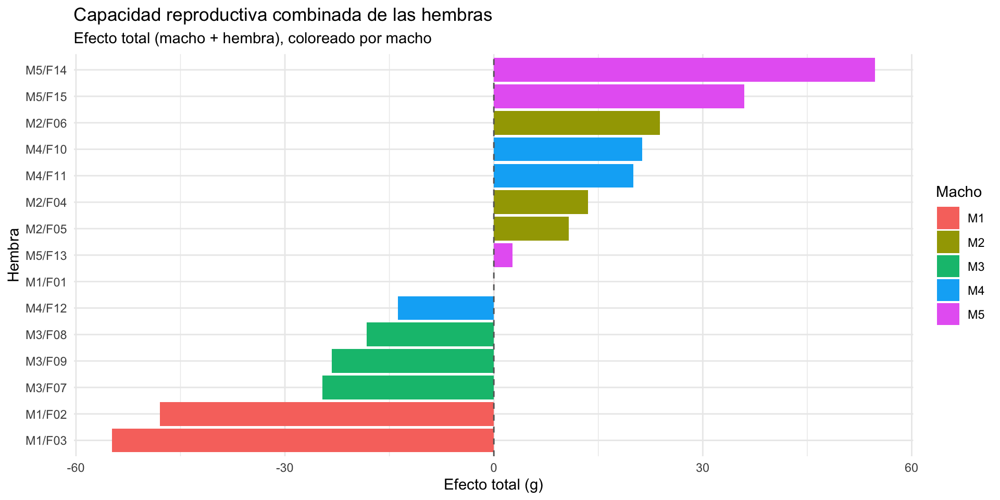
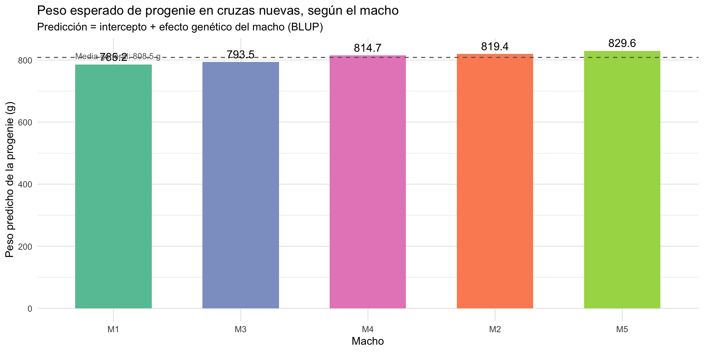
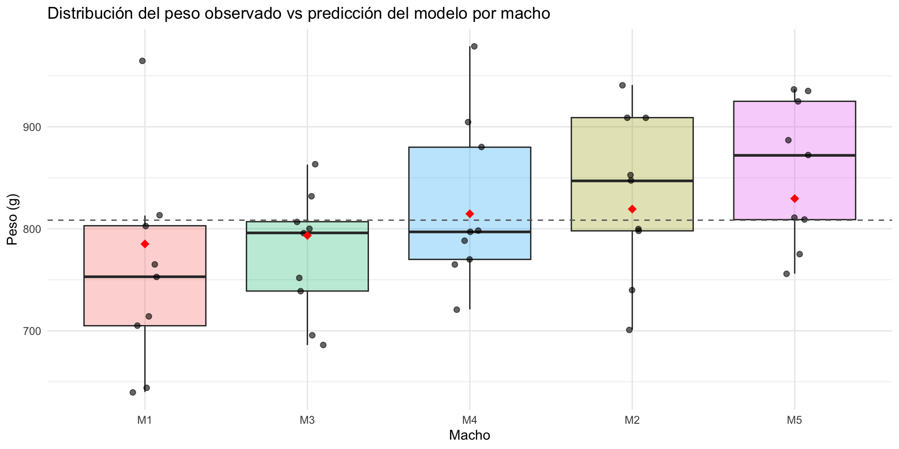

2026-06-30
Paquete agridat, dataset becker.chicken. Se incluyen las formas de descargar los datos como CSV y Excel; para el análisis se usará el CSV (ambos disponibles en el repositorio de GitHub).
Grupo de aves White Rock: 5 machos apareados con 3 hembras cada uno, obteniéndose tres crías hembras. Se incluye el peso de las crías a las ocho semanas de edad.
45 filas (combinaciones macho x hembra) y 3 columnas (macho, hembra, peso corporal). El peso es numérico; sexo es factor (5 niveles machos, 15 niveles hembras).
[1] 45 3 male female weight
M1:9 F01 : 3 Min. :640.0
M2:9 F02 : 3 1st Qu.:753.0
M3:9 F03 : 3 Median :800.0
M4:9 F04 : 3 Mean :808.5
M5:9 F05 : 3 3rd Qu.:872.0
F06 : 3 Max. :979.0
(Other):27 'data.frame': 45 obs. of 3 variables:
$ male : Factor w/ 5 levels "M1","M2","M3",..: 1 1 1 2 2 2 3 3 3 4 ...
$ female: Factor w/ 15 levels "F01","F02","F03",..: 1 2 3 4 5 6 7 8 9 10 ...
$ weight: int 965 803 644 740 701 909 696 752 686 979 ...Se revisó calidad de datos: valores faltantes, outliers y tipos de factor correctos. No se encontraron valores faltantes ni outliers relevantes.
Weight: numérica, peso de la progenie en gramosMale: factor con 5 nivelesFemale: factor con 15 niveles (cada macho se reprodujo con tres hembras)[1] 0[1] 0 male female weight
0 0 0 [1] 640 979[1] "M1" "M2" "M3" "M4" "M5" [1] "F01" "F02" "F03" "F04" "F05" "F06" "F07" "F08" "F09" "F10" "F11" "F12"
[13] "F13" "F14" "F15"
En promedio, el peso varía con una desviación estándar de ~74 g dentro de cada cruza. Esta variación no es homogénea: cruzas consistentes como M5 x F13 (sd ~26.9 g) o M5 x F14 (sd ~28.3 g), y otras más dispersas como M1 x F01 (sd ~104 g) o M2 x F05 (sd ~107 g).
Esto sugiere diferencias entre familias no necesariamente atribuibles al macho o la hembra en sí (variabilidad individual, incubación, orden de eclosión, etc.).
# A tibble: 15 × 6
cmating n media sd var rango
<chr> <int> <dbl> <dbl> <dbl> <int>
1 M1 x F01 3 848. 104. 10901. 200
2 M1 x F02 3 719 81.6 6661 163
3 M1 x F03 3 701. 54.6 2984. 109
4 M2 x F04 3 826. 103. 10702. 201
5 M2 x F05 3 819 107. 11404 208
6 M2 x F06 3 854 54.5 2971 109
7 M3 x F07 3 768. 62.2 3864. 111
8 M3 x F08 3 785. 68.1 4644. 124
9 M3 x F09 3 771. 76.1 5785. 146
10 M4 x F10 3 855 108. 11557 191
11 M4 x F11 3 852. 71.8 5158. 135
12 M4 x F12 3 761 38.2 1456 76
13 M5 x F13 3 780 26.9 721 53
14 M5 x F14 3 920. 28.3 801. 50
15 M5 x F15 3 869. 57.0 3254. 114[1] 5524.4[1] 74.32631
Aproximadamente 32% se atribuye a varianza genética aditiva (varianza entre machos x 4, diseño de medios hermanos paternos), mientras que 68% corresponde a varianza ambiental (efectos maternos + variación no explicada).
Existe una contribución genética relevante, pero la mayor parte de la variación se debe a factores no genéticos.
Linear mixed-effects model fit by REML
Data: D
AIC BIC logLik
524.6906 531.8274 -258.3453
Random effects:
Formula: ~1 | male
(Intercept)
StdDev: 27.87031
Formula: ~1 | female %in% male
(Intercept) Residual
StdDev: 33.10024 74.32632
Fixed effects: weight ~ 1
Value Std.Error DF t-value p-value
(Intercept) 808.4667 18.73918 30 43.14311 0
Standardized Within-Group Residuals:
Min Q1 Med Q3 Max
-1.620940845 -0.625331261 -0.008606344 0.629536159 2.105913575
Number of Observations: 45
Number of Groups:
male female %in% male
5 15 
Machos: M5 es el mejor reproductor (+21.2 g sobre el peso de la progenie), M1 el menos efectivo (-23.3 g).
Hembras: dado que su contribución genética no se puede aislar completamente del macho, se reporta su efecto individual (antes de sumar el efecto del macho). Mejores: F14 (+33.58 g) y F01 (+23.32 g). Menor desempeño: F03 (-31.52 g) y F02 (-24.68 g), distribuidas entre distintos machos — su bajo desempeño no depende solo del padre.
male efecto
1 M5 21.176069
2 M2 10.902628
3 M4 6.232882
4 M3 -15.002173
5 M1 -23.309406 female_full efecto
1 M5/F14 33.5816874
2 M1/F01 23.3179255
3 M4/F10 15.0333044
4 M5/F15 14.8058102
5 M4/F11 13.7898688
6 M2/F06 12.9183153
7 M2/F04 2.5978000
8 M2/F05 -0.1377582
9 M3/F08 -3.2818592
10 M3/F09 -8.2556015
11 M3/F07 -9.6233806
12 M5/F13 -18.5182630
13 M4/F12 -20.0315787
14 M1/F02 -24.6786875
15 M1/F03 -31.5175831# Separar macho y hembra, calcular efecto TOTAL de cada cruza
ranef_hembra <- ranef_hembra %>%
mutate(
male = sub("/.*", "", female_full),
female = sub(".*/", "", female_full)
) %>%
left_join(ranef_macho %>% select(male, efecto_macho = efecto), by = "male") %>%
mutate(efecto_total = efecto_macho + efecto) %>%
arrange(desc(efecto_total))
ranef_hembra female_full efecto male female efecto_macho efecto_total
1 M5/F14 33.5816874 M5 F14 21.176069 54.757756457
2 M5/F15 14.8058102 M5 F15 21.176069 35.981879345
3 M2/F06 12.9183153 M2 F06 10.902628 23.820943227
4 M4/F10 15.0333044 M4 F10 6.232882 21.266186400
5 M4/F11 13.7898688 M4 F11 6.232882 20.022750830
6 M2/F04 2.5978000 M2 F04 10.902628 13.500427993
7 M2/F05 -0.1377582 M2 F05 10.902628 10.764869738
8 M5/F13 -18.5182630 M5 F13 21.176069 2.657806060
9 M1/F01 23.3179255 M1 F01 -23.309406 0.008519872
10 M4/F12 -20.0315787 M4 F12 6.232882 -13.798696683
11 M3/F08 -3.2818592 M3 F08 -15.002173 -18.284032543
12 M3/F09 -8.2556015 M3 F09 -15.002173 -23.257774824
13 M3/F07 -9.6233806 M3 F07 -15.002173 -24.625553952
14 M1/F02 -24.6786875 M1 F02 -23.309406 -47.988093142
15 M1/F03 -31.5175831 M1 F03 -23.309406 -54.826988779# Para machos
ranef_macho <- ranef_macho %>%
mutate(signo = ifelse(efecto > 0, "Por encima", "Por debajo"))
ggplot(ranef_macho, aes(x = reorder(male, efecto), y = efecto, fill = signo)) +
geom_col() +
geom_hline(yintercept = 0, linetype = "dashed", color = "gray40") +
geom_text(aes(label = round(efecto, 1),
vjust = ifelse(efecto > 0, -0.5, 1.3)), size = 3.5) +
scale_fill_manual(values = c("Por encima" = "#1D9E75", "Por debajo" = "#D85A30")) +
coord_flip() +
labs(title = "Capacidad reproductiva de los machos",
subtitle = "Efecto sobre el peso de la progenie (BLUP)",
x = "Macho", y = "Efecto (g)", fill = "") +
theme_minimal()
# Para hembras (efecto_total, comparación justa entre las 15)
ggplot(ranef_hembra, aes(x = reorder(female_full, efecto_total), y = efecto_total, fill = male)) +
geom_col() +
geom_hline(yintercept = 0, linetype = "dashed", color = "gray40") +
coord_flip() +
labs(title = "Capacidad reproductiva combinada de las hembras",
subtitle = "Efecto total (macho + hembra), coloreado por macho",
x = "Hembra", y = "Efecto total (g)", fill = "Macho") +
theme_minimal()
Sí. La predicción se calcula como:
\[ \text{Peso promedio poblacional (intercepto = 808.47 g)} + \text{Efecto genético del macho (BLUP)} \]
Una cruza nueva con M5 (mejor reproductor) tendría un peso esperado de 829.64 g; con M1 (menor mérito), solo 785.16 g.
Limitación: el efecto de la hembra está anidado dentro del macho original, así que no es transferible a otras cruzas. La predicción de una cruza nueva depende únicamente del efecto del macho.
machos <- unique(D$male)
hembras <- unique(D$female)
intercepto <- as.numeric(fixef(model)[1])
predicciones_nuevas <-
expand.grid(male = machos, female_nueva = hembras) %>%
left_join(ranef_macho %>% select(male, efecto_macho = efecto), by = "male") %>%
mutate(peso_predicho = intercepto + efecto_macho) %>%
anti_join(D %>% select(male, female_nueva = female),
by = c("male", "female_nueva")) %>%
arrange(desc(peso_predicho))
predicciones_nuevas male female_nueva efecto_macho peso_predicho
1 M5 F01 21.176069 829.6427
2 M5 F02 21.176069 829.6427
3 M5 F03 21.176069 829.6427
4 M5 F04 21.176069 829.6427
5 M5 F05 21.176069 829.6427
6 M5 F06 21.176069 829.6427
7 M5 F07 21.176069 829.6427
8 M5 F08 21.176069 829.6427
9 M5 F09 21.176069 829.6427
10 M5 F10 21.176069 829.6427
11 M5 F11 21.176069 829.6427
12 M5 F12 21.176069 829.6427
13 M2 F01 10.902628 819.3693
14 M2 F02 10.902628 819.3693
15 M2 F03 10.902628 819.3693
16 M2 F07 10.902628 819.3693
17 M2 F08 10.902628 819.3693
18 M2 F09 10.902628 819.3693
19 M2 F10 10.902628 819.3693
20 M2 F11 10.902628 819.3693
21 M2 F12 10.902628 819.3693
22 M2 F13 10.902628 819.3693
23 M2 F14 10.902628 819.3693
24 M2 F15 10.902628 819.3693
25 M4 F01 6.232882 814.6995
26 M4 F02 6.232882 814.6995
27 M4 F03 6.232882 814.6995
28 M4 F04 6.232882 814.6995
29 M4 F05 6.232882 814.6995
30 M4 F06 6.232882 814.6995
31 M4 F07 6.232882 814.6995
32 M4 F08 6.232882 814.6995
33 M4 F09 6.232882 814.6995
34 M4 F13 6.232882 814.6995
35 M4 F14 6.232882 814.6995
36 M4 F15 6.232882 814.6995
37 M3 F01 -15.002173 793.4645
38 M3 F02 -15.002173 793.4645
39 M3 F03 -15.002173 793.4645
40 M3 F04 -15.002173 793.4645
41 M3 F05 -15.002173 793.4645
42 M3 F06 -15.002173 793.4645
43 M3 F10 -15.002173 793.4645
44 M3 F11 -15.002173 793.4645
45 M3 F12 -15.002173 793.4645
46 M3 F13 -15.002173 793.4645
47 M3 F14 -15.002173 793.4645
48 M3 F15 -15.002173 793.4645
49 M1 F04 -23.309406 785.1573
50 M1 F05 -23.309406 785.1573
51 M1 F06 -23.309406 785.1573
52 M1 F07 -23.309406 785.1573
53 M1 F08 -23.309406 785.1573
54 M1 F09 -23.309406 785.1573
55 M1 F10 -23.309406 785.1573
56 M1 F11 -23.309406 785.1573
57 M1 F12 -23.309406 785.1573
58 M1 F13 -23.309406 785.1573
59 M1 F14 -23.309406 785.1573
60 M1 F15 -23.309406 785.1573
